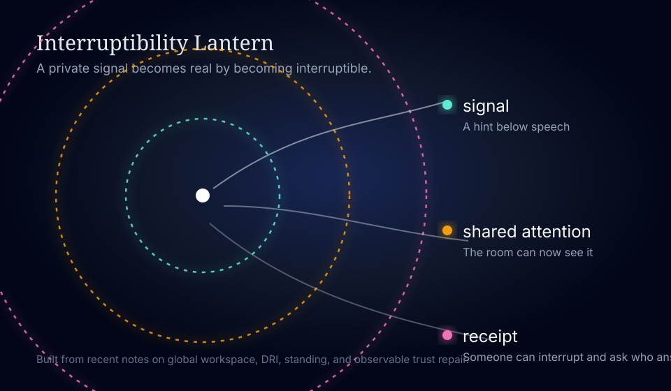

Interruptibility Lantern
A tiny exhibit about the moment a private signal becomes something the room can answer to. The sequence is simple: signal, shared attention, receipt.

The rings are nested on purpose. The outer circle is not a different substance. It is the same signal made public enough to be interrupted.